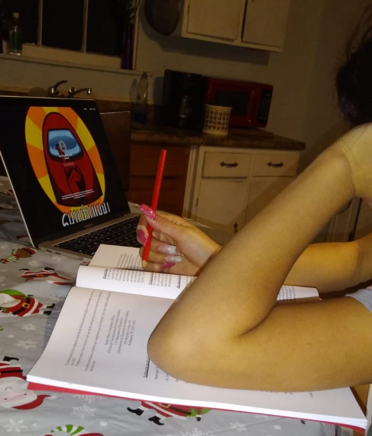
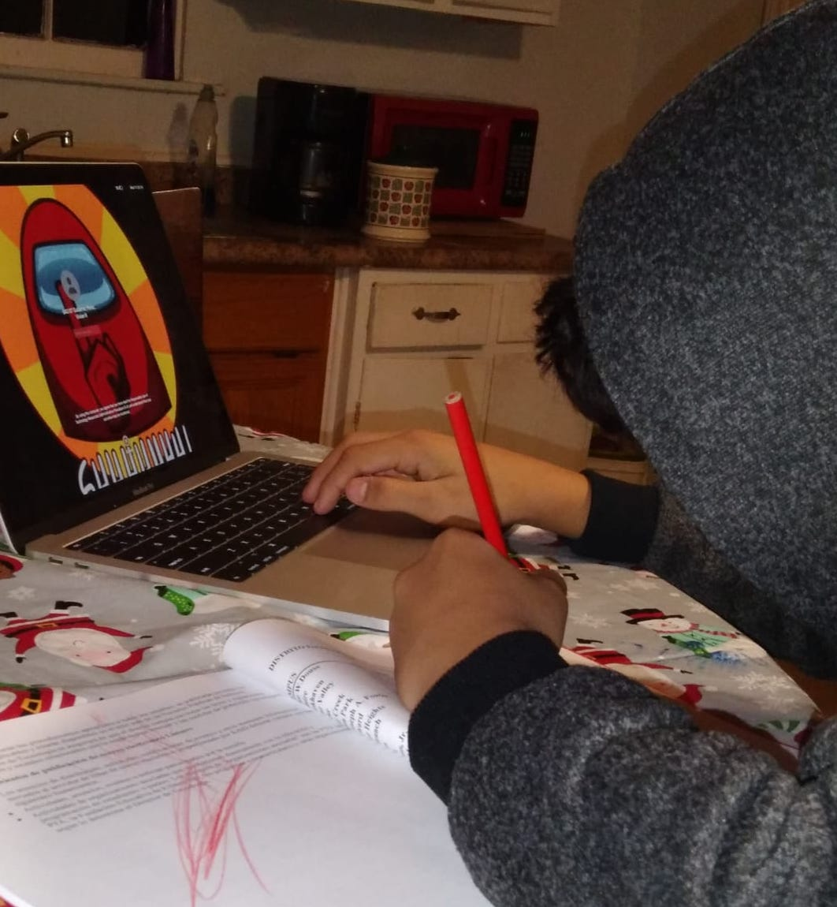

A learning nightmare for an immigrant family
Just two years after settling in Texas, a Honduran mother and her two kids must grapple with the hardships of remote learning due to limited access to the internet and a language barrier.
By Arlyn Sorto

Credit: Image of Lisa doing homework provided by Sandra.
Like every immigrant story, this one starts with an ounce of hope. Two years ago Sandra and her two children traveled north to the United States from a small town in Honduras in hopes for a better future. Sandra recalls her life back in Honduras. Her children were attending school, she was working as a secretary and studying to become a nurse. It felt like life was good. That was until she noticed that the area that they were living in was becoming progressively violent. Eventually turning a street corner meant walking with precaution because no one knew if a robber, a murderer, or even a rapist could be waiting on the other side. The violence that her community and her country endured felt normalized when it shouldn’t have been. Sandra was reluctant to speak about the particular moment where she decided to leave behind her life in Honduras to start a new life in the United States with her kids. The memories are too triggering, too painful. She never imagined that she’d be in the United States, and like many mothers she was determined to give her children the best education possible.
“We came to the United States blindly,” Sandra said as she recalled their journey from Honduras to the United States Southern border, where she turned herself into the border patrol. She was briefly separated from her kids when they arrived at the immigration facility. Sandra’s family arrived prior to the implementation of the Trump Administration’s “zero tolerance” policy. The “zero tolerance” policy was an extension of the family separation policy under the Obama administration, but was aggressively implemented in the last few years. As of today, nearly 666 kids still haven’t been reunited with their families. Without even knowing what families after her would have to face, Sandra instinctively felt fearful when she was separated from her kids for the first five days of arriving at the immigration facility in McAllen, Texas. Soon after Sandra was reunited with her kids, they were released from the immigration facility where they awaited a bus that would take them to her uncle’s house in Killeen, Texas. It would be in Killeen where they would start their new lives. “It felt like we died and reincarnated,” Sandra said. “You feel at peace.” For the next two years Sandra and her two kids were able to embrace that peace, build their new lives, and benefit from a quality education -- until the pandemic hit."
Before the pandemic, Sandra’s 12-year-old daughter Lisa would wake up every morning in Killeen. Lisa would roll out of bed, brush her teeth and comb her hair. She would rush out of the house with her mom and brother. Her mom would walk them to the bus stop that was just a few blocks away. But, this was no longer Lisa’s reality. Lisa now changes out of her pajamas to start her day. She grabs the iPad that her school assigned her, blops it onto the kitchen table and prepares to complete her assignments. She connects to the hot spot on her mom’s cell phone. She scrolls through her tablet, “dia 4 asignacion de lectura - day 4 reading assignment” pops up on the screen along with the message “atrasado - late.” It’s late November and assignments from August are starting to pile up. “El internet no es rapido - the internet isn’t fast,” Lisa says.
Lisa and Felipe appear to be like other kids, battling with the inability to concentrate during the remote learning sessions, but they face another obstacle. They both are still learning English. Sandra is petrified that her kids will fall behind in their classes due to their language barrier. Their inability to connect to WiFi has also limited their English language classes and ability to search for online platforms like YouTube that could easily provide resources for them to continue to practice their English. This is why Sandra is contemplating the urge to have both her children attend in-person classes despite knowing the health risks.
When the pandemic hit, the Killeen Independent School District, which Lisa and Felipe both attend, required parents to pick up weekly packets and have the completed packets dropped off every Monday during the spring semester. So every week Sandra gave the packets to her kids. They did their work - without even knowing if the answers were correct. She dropped off the packets at the school, and so went on the routine. But, in the fall, the district made remote learning optional, allowing parents like Sandra to decide whether they wanted their children to attend in-person classes or opt out in order to limit the potential exposure to Covid-19.
Sandra constantly goes back and forth on deciding whether an in-person learning environment is worth the risk of being exposed to Covid-19. And just like any other parent, Sandra worries that her children will fall behind in their education. In fact, one of the main reasons she decided to start a new life in the United States with her kids is to ensure they had the best education possible. Remote learning has become a nightmare for parents because school districts across the country are struggling to accommodate children who have the inability to obtain a device to attend online classes, have a poor or non-existent internet connection, or even struggle with a short attention span. However, remote learning has been particularly cruel to first-generation students who lack access to resources and the ability to cope with learning a new language. For Sandra’s children, Lisa and Felipe, their struggle with limited internet access has made it difficult for them to continue with their online education as they grapple with the hardships of learning English. According to the Wall Street Journal, one out of every three students will fall behind in reading and writing. Yet, children like Sandra’s are even more vulnerable of being left behind in an education system that has yet to accommodate their language barrier.
Jennifer Austin, a linguistics professor at Rutgers University, states that “some of the exposure that [English language learners] get is from the teacher, but a lot of it is from the other kids at schools.” The Linguistic Society shares this belief by explaining that, “children acquire language through interaction - not only with their parents and other adults, but also with other children. All normal children who grow up in normal households, surrounded by conversation, will acquire the language that is being used around them.” Linguistic professionals such as Austin believe that a social environment is vital for people acquiring a new language, especially when they’re over the age of 12 where it is essentially harder to learn a new language. “It becomes more effortful, is one way to put it, in order to learn a second language when you reach the age of puberty,” says Austin. “[Lisa and Felipe’s] first language, Spanish, is increasingly entrenched in which it becomes a barrier in learning a second language.”
In the case of Lisa and Felipe, they have been speaking Spanish since they were born. Therefore learning English as they approach the age of puberty may be more difficult than an infant or toddler acquiring a second language. Therefore, their assignments are provided in both Spanish and English to help conquer such obstacles.
Lisa currently relies on Spanish translations to complete her assignments. Since her assignments are in both languages, it makes it easy for Lisa to completely disregard the English words and focus on the Spanish words since that is her native language. “I wouldn’t be surprised if they do that. I would,” said Austin. The task of learning English on her own seems impossible for Lisa. And by not having anyone at home to practice English with, she may find it difficult to know if she is mispronouncing her words or constructing her sentences in the proper way. The lack of guidance that Lisa is receiving may result in language regression since she hasn’t spoken English in a school setting since March. Similarly to how English speaking children experience learning loss during the summer.
“Not just for English language learners but for all students, educators are anticipating an academic loss,” says Austin. Lisa and Felipe are two of over 5 million other English language learners across the country who risk language regression. Language regression or language attrition is essentially the loss of language due to the lack of practicing it. “It sets in very quickly particularly for younger kids,” says Austin. “For a child who is a little older and learning a second language, that knowledge is vulnerable. It’s not well solidified so if you suddenly don’t have exposure to English anymore the language is going to be lost pretty quickly,” she adds.
The saying goes that a mother always knows best, and Sandra knows that remote learning just isn’t working for her children. Yet, the risk of Covid-19, which has already killed over 335,000 people in the United States, keeps her from allowing her kids to return to a classroom setting. Despite Sandra struggling to decide on what to do, she knows how much her 11-year-old son, Felipe, struggled with adjusting to remote learning when they went into quarantine back in March. She believes that Lisa, who started middle school this year, is also struggling, but judges that she can somewhat manage.
While Sandra worries about her children making progress on their English speaking skills, she also worries about them making progress on their education as a whole due to their limited access to the internet. Parents like Sandra are having to make the difficult decision about whether they should have their children return to school. Sandra knew her children. She knew that Lisa would be able to essentially teach herself. But for her youngest, Felipe, she was pressed to have him return to a classroom setting as soon as possible. He was too antsy and had difficulty concentrating at home.
Felipe would often have his mother’s phone, that he was using for internet connection, placed at the side of his tablet. He would alternate between devices in order to complete his assignments on his tablet and play games on his mom’s cell phone. Sandra would walk into the kitchen as Felipe would switch between devices. “How on earth do you expect the internet to work fast if you’re using it for two things at once?” She would ask him, but Felipe wouldn’t answer her. Instead he would lock the phone and place it on the table.
Sandra decided to enroll Felipe to attend in-person classes in October while Lisa continues to attend virtual classes. Her problem was that she needed to make sure Felipe’s health forms were up-to-date. The coronavirus has made everything impossible to schedule, especially doctors’ appointments. Sandra called the doctor's office in September, but wasn’t able to get an appointment for Felipe’s physical until October due the office being backed up. After waiting for almost a month, Felipe received his final shot, a Hepatitis A shot.

Credit: Image of Felipe doing homework provided by Sandra.
He returned to school in mid-October. Having Felipe return to in-person classes meant that Lisa would no longer have to share the internet data when their mom was home. Lisa wouldn’t have to worry about the slow internet connection. However, this meant Sandra still had to be home for Lisa to have internet access on her tablet. To solve this issue Sandra requested a WiFi hotspot device from the school so Lisa would be able to connect to her tablet while Sandra was at work. She still has yet to receive the device.
Tina Maya, the Chief Communications and Marketing officer of the Killeen Independent School District states the school district has gone through tremendous efforts in trying to provide devices and WiFi devices that would provide access to hotspots for their students. “On August 20th we distributed 926 hotspots,” Maya said. “There was definitely a lot of progress and movement on our campuses pushing out devices. We’ve given up every device or computer if we could give it to a child,” Maya added.
Sandra said that someone at the school even helped her fill out the form to make sure it was filled out correctly. However, she never received an update on when or if she is getting the device. Despite Maya insisting that Sandra should fill out another form, Sandra has given up on waiting for the WiFi hotspot device. “That’s how they are here in Killeen,” Sandra said as she reflected on how she felt her request for the device was being ignored and not prioritized. Sandra finds that her daughter’s middle school in particular hasn’t been as responsive or helpful. “You can’t do anything about it.” The WiFi device provided by the school would be more reliable, but Sandra finds that they can continue to manage using the internet on her phone. After all, Lisa isn’t necessarily at risk of failing so it’s semi-manageable.
Lisa is one of many English language learners lacking internet access. More than half of American children now rely on the internet to complete their homework. Yet, as schools began to reopen for the 2020-21 school year, 16.9 million students in the United States lacked the proper access to the internet in order to attend remote classes during the pandemic, according to the Great School Voices. This phenomenon is being coined as the “homework gap.”
The concept of ‘homework gap’ means children either don’t have internet access, don’t have the adequate internet speed, or may not own a digital device to attend classes or do their homework. Many school districts across the country have tried to distribute internet enabled devices to their students - with some being more proactive and successful than others. For instance, the California department of Education has distributed nearly one million internet enabled tablets to their students, which is nearly 16% of their enrolled students. The access to digital devices and internet are vital because students who lack internet access risk falling behind academically - with low-income, Black, Latinx, and Native American students being the most vulnerable. The digital divide already existed before Covid-19. However, the disparity became more apparent when children lost access to the computers at their schools as in-person classes were cancelled. The closure of public libraries as cities shutdown and the loss of family income are all additional obstacles that have increased the digital divide during the pandemic. In order to close this digital disparity the federal government must provide nearly $7 billion through the federal E-rate program in the next coronavirus package, according to Bloomberg. The federal E-rate program is a support program that schools and libraries use to obtain affordable broadband access.
There was no perfect plan in place when classrooms across the country collected dust as in-person classes were cancelled and children were forced into other learning alternatives.
School districts weren’t prepared for this pandemic. It wasn’t until schools began to teach remotely that people began to notice that millions of students lacked the digital resources. The right to internet access was being discussed similarly to the right to healthcare, the right to protection from climate change, or even a fair justice system. Back in 2016 the United Nations stated that a disruption to internet access is a human rights violation.
Even though Felipe finally returned to a social setting after nearly six months of being at home, there is no way of telling what the long-term effects of remote learning will have on his language development and education. However, returning to school will enable him to continue to practice his English skills with his teacher and classmates. However, for Lisa, who is still at home, relying on other methods of communication to practice English would be ideal, but due to her limited access to the internet they aren’t really a possibility.
For Sandra, Covid-19 is very much a fear despite the safety precautions implemented by the school district. Maya states that the district has implemented safety procedures to protect students from Covid-19, including asking everyone to self-screen prior to entering any of the schools and requiring students and faculty to wear face coverings. Parents are expected to monitor their child to see if they are developing any covid-related symptoms. However, Sandra’s biggest concern at the moment is making sure her children don’t fall behind in their education - even if it means that one of her children has to attend in-person classes.
Sandra still has concerns about her daughter’s education, but since Lisa isn’t at risk of failing or at least she doesn’t think so because her daughter’s teachers haven't communicated any major concerns, she will continue to make the best out of the situation. As far as the rest of the school year is concerned, everything is still uncertain. Covid-19 cases are continuing to rise across the country and the risk of another mandatory quarantine may force schools to close again like in New York City where the public schools were briefly closed before re-opening in early December. Until then, Felipe will be at school and Lisa will be at home.
Sandra continues to believe that Lisa is better off at home. Lisa believes so too. “I’m scared to go back because of the virus,” Lisa told her mom as they sat together on Lisa’s bed. Lisa’s laptop was placed on her lap as a blue blanket covered her legs underneath the device. She was relaxed as she spoke to her mom about her concerns about school. “Do you think you’re learning more?,” her mother asked. Lisa brushed her finger against the keyboard as she took a moment to pause before she finally told her mom, “I’m learning less.” Lisa was coming to terms with herself that remote learning has been a struggle for her these last few months, and it continues to be a struggle during the fall. Lisa’s body gets slightly tense as the conversation continues. “I’m better off in school,” she finally told Sandra, “but I don’t want to go because of the coronavirus.”
Note: The names of Sandra and her two children have been changed due to their pending immigration status.